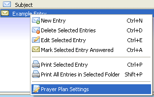

The following are the ways to edit an entry's Prayer Plan settings:
- Clicking this
 toolbar button.
toolbar button.
- Choosing this action from the Entry menu.

- Choosing this action from the Entry context menu (right-click menu).

By default, each entry in your journal has its Prayer Plan Settings set to "None." This means the journal entry will never appear in any Prayer Plan unless you change its Prayer Plan Settings. The first thing you should do is choose which Prayer Plan the entry will show up in by selecting it from the drop-down list.
You can setup an entry to display in a Prayer Plan daily. You can determine how many days you want in between the times it shows up. And, like every option, you can specify when the settings will begin. The default is the day you setup the entry's settings.
Next, you can set any entry to display weekly. Just like daily, you can set how many weeks you want in between the times it shows up. You can also set what day(s) during the week the entry will show up.
For monthly, you have several options. The first option is to have the entry show up on a Prayer Plan monthly like weekly and daily. You can specify how many months will be in between each month and, of course, the start date. The other options are: "Last Day of Month", "First Day of Month", "First Week of Month", "Second Week of Month", "Third Week of Month" and "Fourth Week of Month." For each week of the month, you can specify which day of that week it should show up.
Next, you have the option to setup an entry to show up in years. This is usefull for such things as someone's birthday. Like the other options, you can set how many years between the times it shows up and you can set the starting date.

Finally, you have the option to setup an entry to show up once. This is usefull for such things as someone's surgery. For this setting, you just need to specifiy what day the entry should show up in a Prayer Plan.